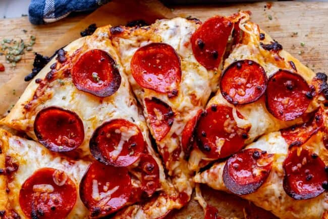

Odin Recipes
Wanna Pizza This?

Total Cooking Time: 1 hr 20 mins
Description
This homemade pizza recipe is perfect for parties! Everyone loves pizza, and your guests can customize their toppings to suit their personal tastes.
Ingredients
- ½ heaping cup pizza sauce
- 8 ounces fresh bocconcini mozzarella, sliced
- ½ cup sliced cherry tomatoes
- 10 basil leaves
- Pinch red pepper flakes
- Extra-virgin olive oil, for drizzling